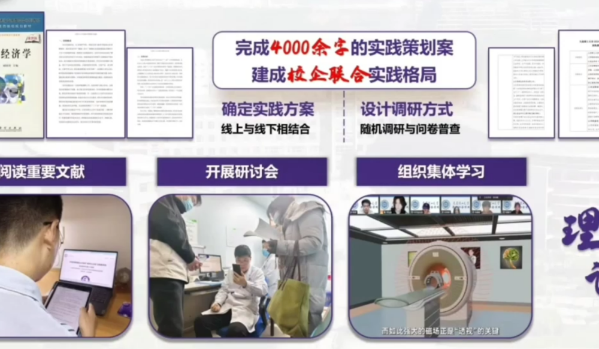
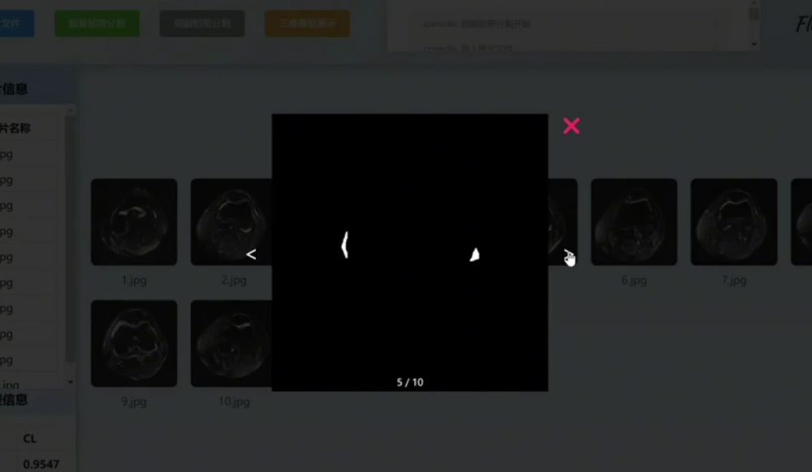

大连市城乡医疗服务效率与可及性实证研究
思想政治理论课程社会实践
大连理工大学软件学院、大连理工大学-立命馆大学国际信息与软件学院
“医路畅通”社会实践团

活动纪实

集体会议商讨
项目团队围绕“大连市城乡医疗服务效率与可及性”实践主题展开的多轮跨学科研讨。会议聚焦城乡医疗资源配置失衡问题，通过卫生经济学与公共管理学理论碰撞，构建“理论 - 数据 - 模型 - 对策”四维研究体系，最终形成覆盖机构运营数据、居民调研与临床影像的系统性调研方案，为实证研究奠定框架基础。

医学影像辅助系统介绍
视频全面展示自主研发的AI医学影像辅助分析与建模系统，该系统集成动态平衡分析框架与深度学习算法，实现CT、MRI等多模态影像的模型构建分析。系统通过“技术转化->公众普及”机制，显著缩短诊断时间并降低漏诊率，同时发表学术论文，为医疗资源下沉提供技术支撑。
调研过程记录
团队走访100余位大连城乡居民采集运营数据，深入社区开展千人级问卷调研。用镜头记录数据采集过程中破解“地理鸿沟”与“数字鸿沟”的创新实践，多维度数据整合揭示城乡医疗效率差异，为资源配置优化方案提供实证依据，展现“理论 - 实践 - 转化”的完整研究闭环。
DLUT-ISE社会实践团